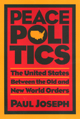

Envisioning a New World Order that promotes environmental renewal, stronger democracy, economic justice, and citizen activism
Envisioning a New World Order that promotes environmental renewal, stronger democracy, economic justice, and citizen activism


 Envisioning a New World Order that promotes environmental renewal, stronger democracy, economic justice, and citizen activism
Envisioning a New World Order that promotes environmental renewal, stronger democracy, economic justice, and citizen activism

|  |
Peace PoliticsThe United States Between Old and New World OrdersPaul Josephpaper EAN: 978-1-56639-023-1 (ISBN: 1-56639-023-0) |
"Joseph's book is especially valuable and distinctive for its freshly mapped avenues into the sometimes dense field of international relations. His sophisticated analysis of 20th century U.S. peace movements is richly textured and analytically revealing."
—Cynthia Enloe, Clark University, and author of Bananas, Beaches, and Bases
The end of the Cold War promises a new era of global peace in which domestic reform could be achieved. Yet armed conflict persists throughout the world. Economic inequality, declining public services, environmental degradation, and other forms of domestic decay threaten the quality of life in the U.S. In Peace Politics, Paul Joseph develops a systematic comparison of the "old" and "new" world orders that links foreign and domestic affairs. By examining the issues that are central to any realignment of American politics, he offers a sweeping account of the possibilities and obstacles for progressive change over the 1990s.
Acknowledging that all nations and people have a right to security, he argues for a global attack against a broad range of shared threats, including human rights violations, nuclear devastation, poverty and despair, politically repressive governments, and environmental threats. Joseph also addresses the links between the militarism in the U.S. and deforestation of the Amazon, the uncertain victory of the Gulf War, the effect of public opinion on security issues, the impact of peace movements, nuclear weapons policy, and the need for a peace dividend.
Linking war and peace issues with environmental renewal, stronger democracy, economic justice, and citizen activism, Peace Politics is a rallying cry for rationality, genuine security, and mutual survival.
"Paul Joseph offers a much needed, coherent, progressive U.S. foreign policy, based on an analysis of the emerging world and the realities of American society."
—Louis Kriesberg, Director, Program on the Analysis and Resolution of Conflicts, Syracuse University
"Peace Politics is the first book that I have found that fully and systematically explores the implications of the dramatic shift in the international system that we have witnessed in the past few years."
—William A. Gamson, Professor of Sociology, Boston College
"This book is a tour de force. Joseph has packed an enormous amount of material and thoughtful analyses in a very readable presentation. The book is comprehensive, balanced, and wise."
—S.M. Miller, Visiting Professor, Boston College and Senior Fellow, Commonwealth Institute
Acknowledgments
Introduction: National Security in the Old and New World Orders
1. The Bomb and the Rain Forest
2. Old and New World Orders in Operation Desert Storm
3. National Security and the New World Order: What the Public Thinks
4. Peace Movements Make a Difference
5. Developing a Peace Economy
6. Security, Democracy, and Nuclear Weapons Policy
7. Peace Politics: Obstacles and Possibilities
References
Index
Paul Joseph is Associate Professor of Sociology and Chair of the Anthropology/Sociology Department and Peace and Justice Studies Program at Tufts University.
Political Science and Public Policy
© 2015 Temple University. All Rights Reserved. This page: http://www.temple.edu/tempress/titles/992_reg.html.